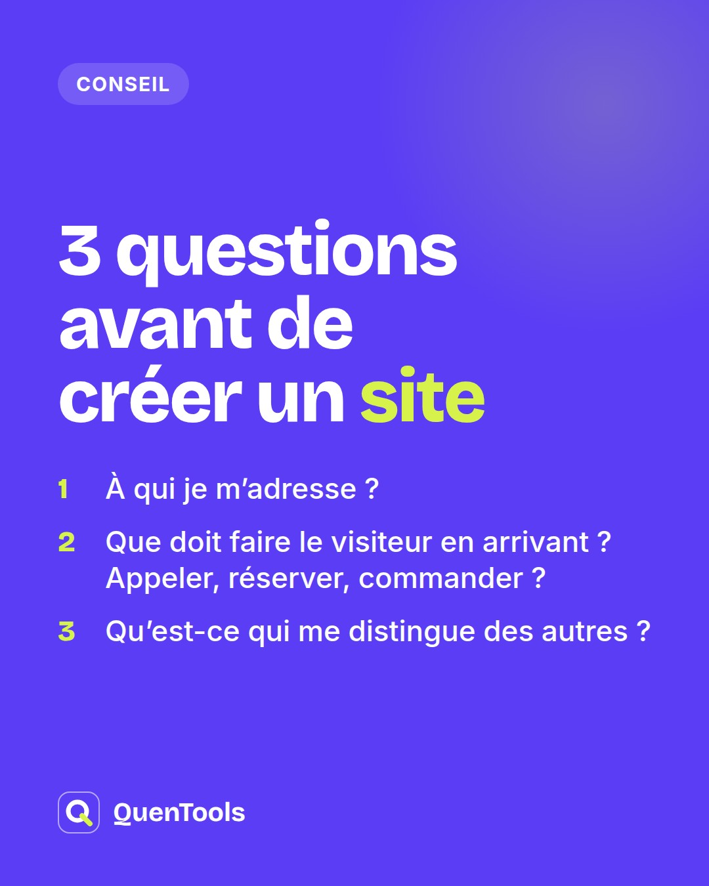
Conseil3 questions avant de créer un site
Avant de penser couleurs et logo, un bon site commence par trois questions simples 👆
Si vous savez y répondre, le reste suit naturellement. Si vous hésitez, c’est normal : c’est justement là que je peux vous aider.
Et vous, laquelle vous pose le plus de difficultés ? Dites-le en commentaire 👇
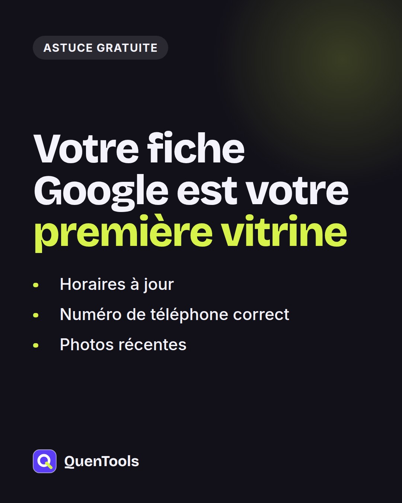
Astuce gratuiteVotre fiche Google est votre première vitrine
Avant même de visiter votre site, vos futurs clients voient votre fiche Google 📍
Trois choses à vérifier aujourd’hui, ça prend dix minutes :
• vos horaires, surtout les jours fériés
• votre numéro de téléphone
• des photos récentes de votre activité
C’est gratuit et ça se fait depuis votre téléphone.
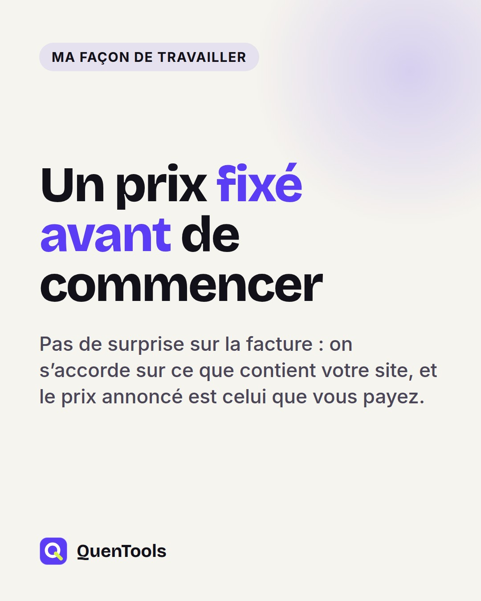
Ma façon de travaillerUn prix fixé avant de commencer
Ce qui fait peur quand on commande un site, c’est la facture qui grossit en route 😬
Chez moi, c’est simple : je vous décris ce que contient le site, je vous donne un prix, et c’est ce prix-là. Le devis est gratuit et sans engagement.
Vous avez déjà eu une mauvaise expérience avec un prestataire ? Racontez-moi 👇
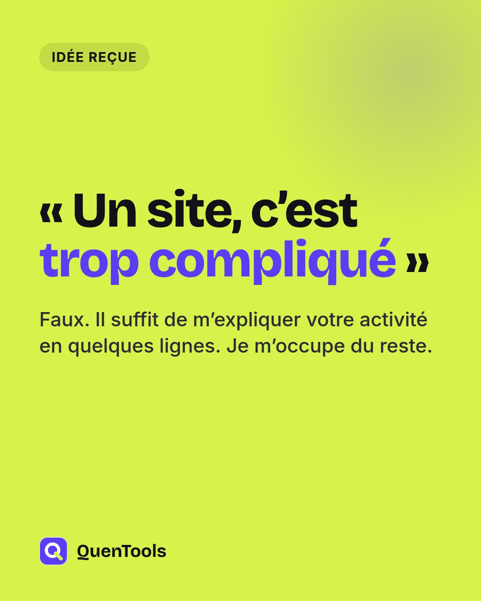
Idée reçue« Un site, c’est trop compliqué »
« Je ne saurais pas par où commencer. » C’est la phrase que j’entends le plus 🙂
Bonne nouvelle : vous n’avez rien de technique à faire. Quelques lignes sur votre activité, vos horaires et ce que vous voulez que vos clients fassent, et je m’occupe du reste.
Votre blocage, c’est quoi ? Écrivez-le en commentaire, je réponds à tous 👇
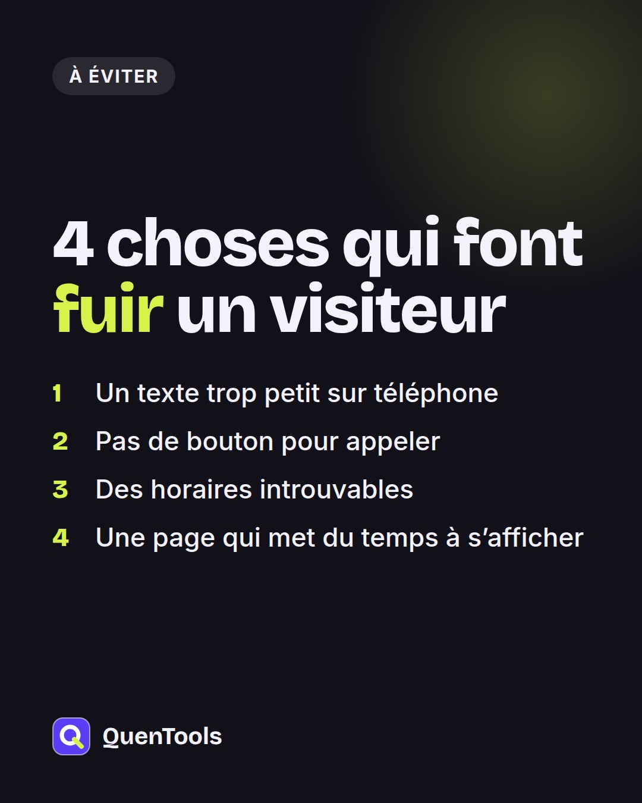
À éviter4 choses qui font fuir un visiteur
Un visiteur décide en quelques secondes s’il reste ou s’il part ⏱️
Quatre erreurs qui le font partir, et que l’on retrouve souvent :
1️⃣ un texte trop petit sur téléphone
2️⃣ pas de bouton pour appeler
3️⃣ des horaires introuvables
4️⃣ une page lente à s’afficher
Votre site en a combien ? Soyez honnête 😅 👇
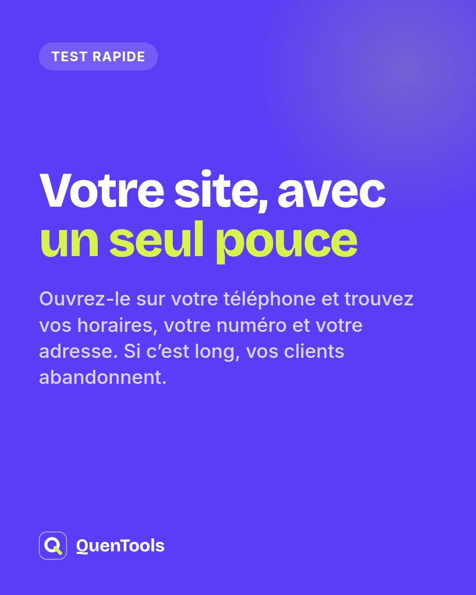
Test rapideVotre site, avec un seul pouce
Le test le plus simple du monde 📱
Sortez votre téléphone, ouvrez votre site, et essayez de trouver vos horaires, votre numéro et votre adresse, avec un seul pouce.
Si vous avez dû zoomer, chercher ou attendre, vos clients l’ont vécu aussi.
Vous avez réussi ? Dites-moi en commentaire 👇
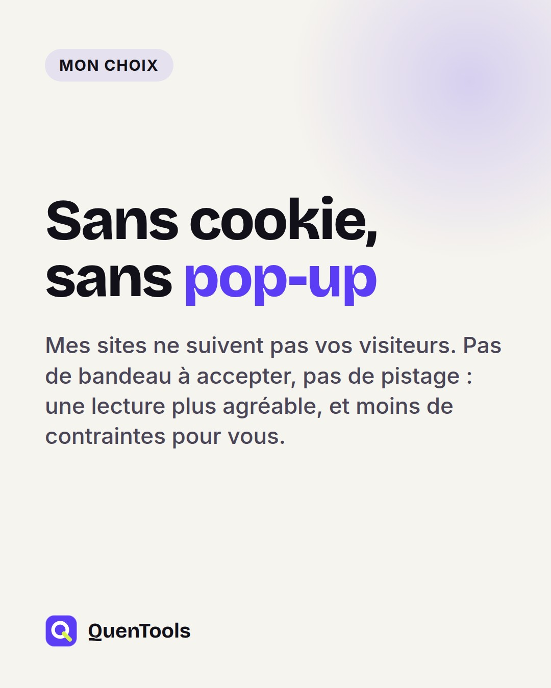
Mon choixSans cookie, sans pop-up
Vous aussi, vous fermez les bandeaux de cookies sans les lire ? 🍪
Les sites que je crée ne suivent pas vos visiteurs : pas de traceur, donc pas de bandeau envahissant. Le site se lit mieux, et vous avez moins de contraintes.
Vous, ça vous agace aussi ? 👇
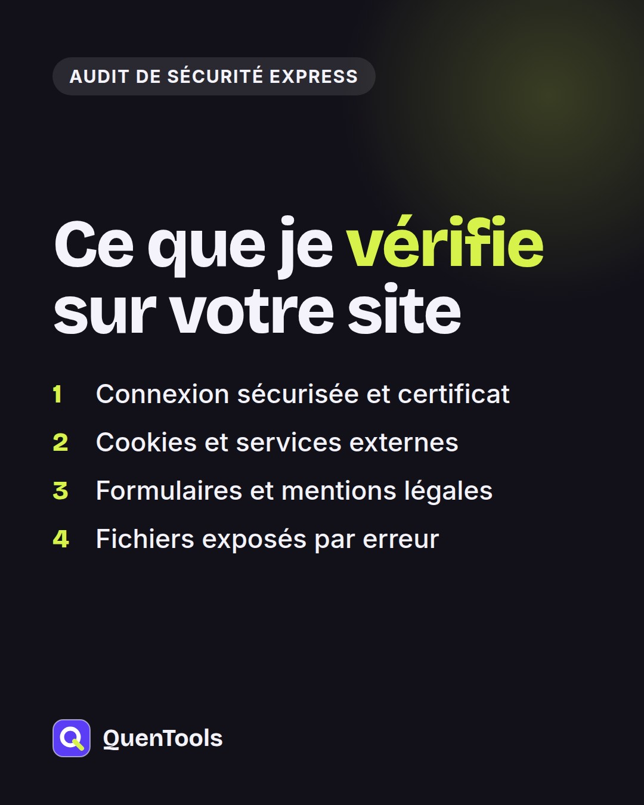
Audit de sécurité expressCe que je vérifie sur votre site
L’audit de sécurité express, concrètement 🔍
Je regarde votre site de l’extérieur, comme le ferait n’importe quel visiteur, et je vous remets un rapport clair avec ce qu’il faut corriger en priorité.
Je ne contrôle que ce que je peux réellement vérifier, et uniquement avec votre accord écrit.
Une question sur le contenu du rapport ? Posez-la en commentaire 👇
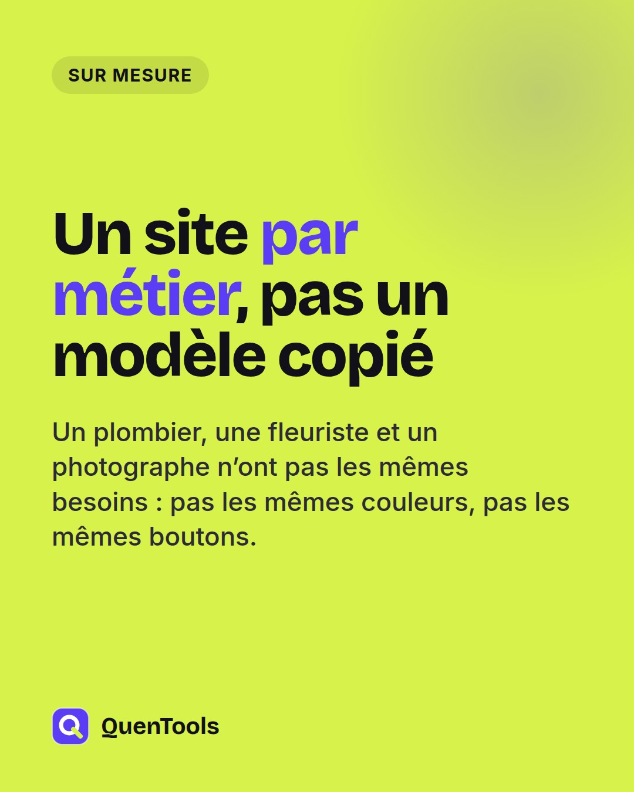
Sur mesureUn site par métier, pas un modèle copié
Votre site doit vous ressembler, pas ressembler à celui du voisin 🎨
Un plombier a besoin qu’on puisse l’appeler en un geste. Une fleuriste, de belles photos et un panier. Un photographe, d’un portfolio qui respire.
C’est pour ça que je pars de votre métier, pas d’un modèle générique.
Votre métier, c’est quoi ? 👇
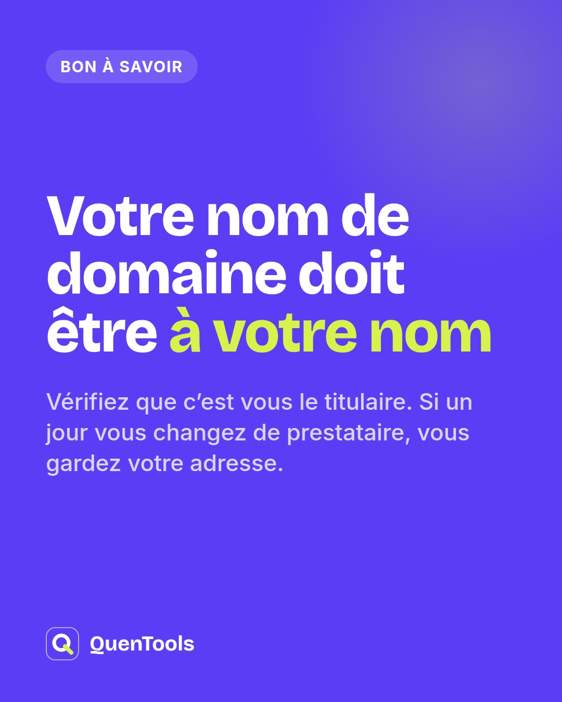
Bon à savoirVotre nom de domaine doit être à votre nom
Un détail qui peut coûter cher plus tard 🔑
Le nom de domaine, c’est l’adresse de votre site (monentreprise.fr). Assurez-vous que c’est bien vous qui en êtes le titulaire, pas votre prestataire.
Ainsi, si un jour vous changez de prestataire, vous gardez votre adresse et vos clients vous retrouvent.
Vous savez qui est le titulaire du vôtre ? 👇
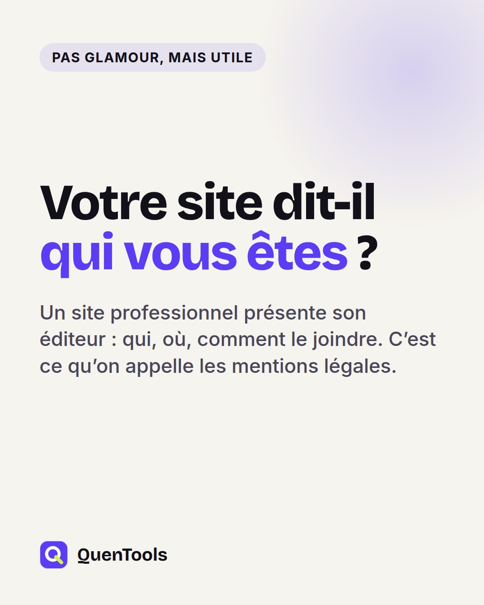
Pas glamour, mais utileVotre site dit-il qui vous êtes ?
Les mentions légales ne font rêver personne… mais elles rassurent vos visiteurs 📄
Un site professionnel indique qui l’édite et comment le joindre. Cela donne confiance, et c’est une obligation pour les sites professionnels.
Pour les détails de votre situation, rapprochez-vous d’un professionnel du droit : je peux simplement vous dire si vos mentions sont présentes ou non.
Les vôtres sont en place ? 👇
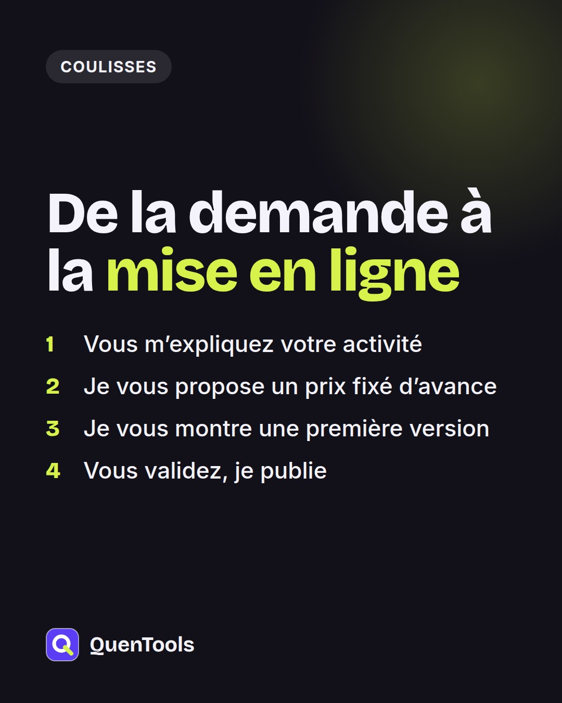
CoulissesDe la demande à la mise en ligne
Comment ça se passe, concrètement ? 🛠️
1️⃣ Vous m’expliquez votre activité en quelques lignes
2️⃣ Je vous propose un prix fixé d’avance
3️⃣ Je vous montre une première version
4️⃣ Vous validez, je mets en ligne
Pas de jargon, pas de surprise. Une étape qui vous inquiète ? Dites-le en commentaire 👇
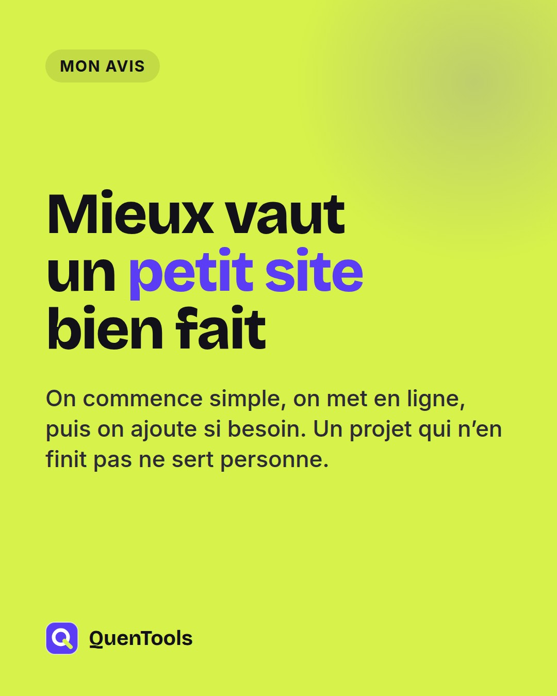
Mon avisMieux vaut un petit site bien fait
Mon conseil le plus honnête 💬
Un site simple, clair et en ligne cette semaine vaut mieux qu’un projet immense qui n’aboutit jamais. On commence par l’essentiel, on met en ligne, puis on ajoute ce qui est vraiment utile.
C’est aussi pour ça que je préfère les petits projets bien faits aux gros chantiers.
Vous préférez tout d’un coup ou étape par étape ? 👇
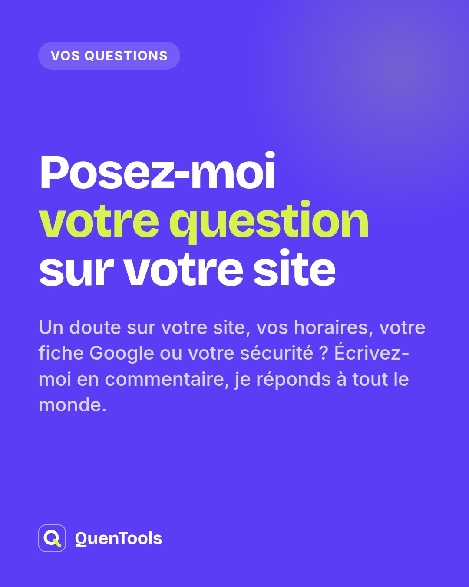
Vos questionsPosez-moi votre question sur votre site
Cette semaine, j’ouvre la boîte à questions ❓
Un doute sur votre site, sur votre visibilité, sur votre sécurité ? Posez votre question en commentaire, je réponds à tout le monde, et les meilleures questions feront l’objet d’une publication.
À vous 👇